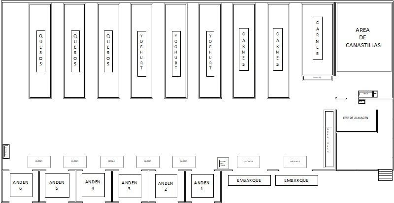

Panel general
Desde aquà accedes a los planos, las inspecciones IA y el inventario con hotspots. Es la vista que verÃan encargados y jefes de sección al iniciar sesión.
Planos y estanterÃas
Gestiona la estructura fÃsica de tu tienda: planos, estanterÃas y zonas. Cada estanterÃa se convierte en un elemento que la IA puede entender.
- Definición de estanterÃas y posiciones.
- Subzonas por departamento o responsable.
- Acceso directo al editor de plano.
Últimas inspecciones IA
Consulta qué vieron las cámaras en cada estanterÃa: productos presentes, huecos y posibles errores frente al stock teórico.
- Listado de inspecciones ordenadas por fecha.
- Relación entre estanterÃas y zonas de tienda.
- Acceso directo al detalle de cada inspección.
Inventario & hotspots
Visualiza el inventario desde el punto de vista de los huecos: dónde faltan productos y qué impacto tienen en ventas.
- Listado de estanterÃas con huecos detectados.
- Vista rápida de productos afectados.
- Filtro por tienda, zona y estado.
Resumen de estado por tienda
Este módulo serÃa el punto de entrada para responsables de zona, mostrando el nivel de “salud†de cada tienda o almacén.
| Tienda / Almacén | EstanterÃas controladas | Última inspección | Huecos detectados | Responsable(s) | Estado |
|---|